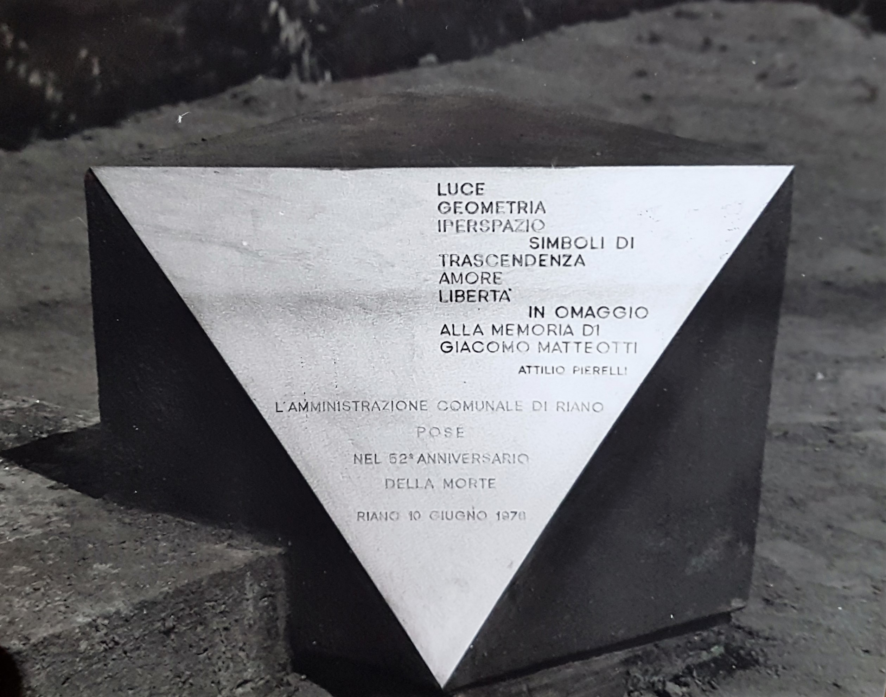
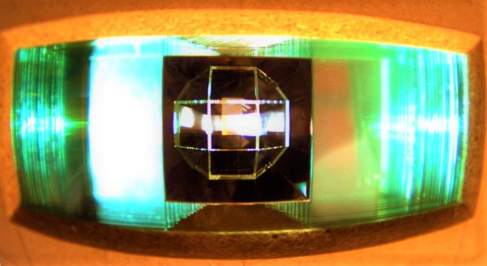
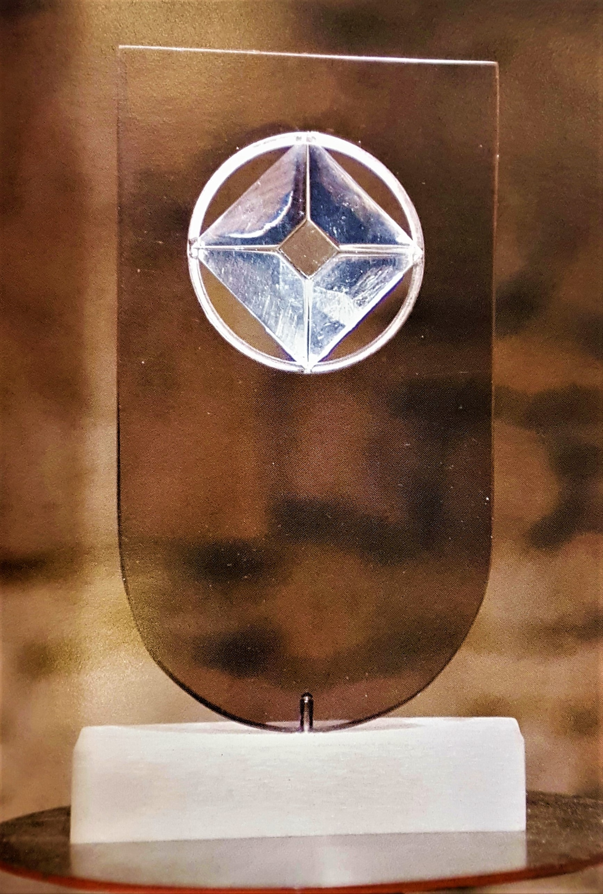

luce e geometria (1974 - 1983)
In tutte le opere appartenenti ai periodi di ricerca precedenti, l’elemento luce, fondamentale per l’espressione artistica di Pierelli, e quindi il suo modo di colpire e riflettersi sulle superfici ondulate delle sculture, dipendevano soprattutto dal caso. Ma, a partire dal 1974, quest’ultimo ed imprevedibile fattore verrà sempre più ridotto, fino ad essere definitivamente eliminato, a favore dell'assoluto rigore geometrico. Ed è infatti al periodo Luce e geometria che appartiene l’opera più rappresentativa di questo rivoluzionario cambiamento di prospettiva: l’Ipercubo. La scultura, un’inedita interpretazione dell'ipercubo geometrico quadridimensionale, costruita interamente in acciaio inox, è composta da un cubo interno ed uno esterno. La struttura speculare che si genera tra le facce del cubo esterno, assieme al gioco di specchi e riflessioni, rende il cubo interno sempre visibile da qualsiasi punto lo si osservi, come se fosse sospeso perennemente nello spazio.
La genialità di Pierelli sta nella sua straordinaria capacità di immaginare e concretizzare opere rappresentanti soggetti di natura scientifica inediti ed ancor prima della loro teorica formulazione. Cavità praticate all’interno di supporti in marmo o in calcestruzzo racchiudono strutture cristalline dai misteriosi effetti ottici. Masse plastiche vengono abitate da particolari trasparenze geometriche che, incastonandosi, permettono alla scultura d’essere colpite e attraversate dalla luce. Le forme sembrano meteoriti, rocce, reperti di provenienza ignota: meandri materici che nascondono e simboleggiano il mistero degli spazi subatomici a più di tre dimensioni.
Le sue sculture sono rivelazioni figurative di un principio estetico concepito nella realtà empirica, ma sono comunque oggetti nati con la volontà di “costruire” letteralmente una nuova dimensione, il tetraspazio. La Pentacella e la Sedicicella sono infatti figure geometriche appartenenti allo spazio quadridimensionale, ma costituite da tetraedri tridimensionali, rispettivamente cinque e sedici, e dunque percettivamente accessibili ai nostri occhi. La morfologia di tali superfici crea delle enigmatiche forme prismatiche rendendole portatrici attiranti di una luce che, oltre ad identificarsi con il fattore Spazio, introduce a sua volta anche il fattore Tempo. Se lo spazio è immoto, il tempo obbedisce comunque alle lentissime, ma pur sempre esistenti, variazioni della luce.
Nel corso della sua attività artistica, Pierelli si dedicò anche alla creazione e alla progettazione di suggestivi monumenti: dal Monumento a Giacomo Matteotti (1976) al Monumento agli scienziati (1977 - 1985), fino ad arrivare alla Chiesa ispirata alla Geometria degli Iperspazi, un ulteriore omaggio fatto dall’artista all’universo scientifico.
 Monumento a Giacomo Matteotti, 1976, acciaio inox e cemento, cm 500x90x60, Comune di Riano (Roma)
Monumento a Giacomo Matteotti, 1976, acciaio inox e cemento, cm 500x90x60, Comune di Riano (Roma)
Monumento a Giacomo Matteotti (particolare)
Progetto per Monumento agli scienziati, 1985, vetro, cm 18,5x60x30
Progetto n. 1 per il Monumento agli Scienziati, 1977, plexiglass